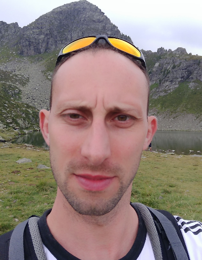
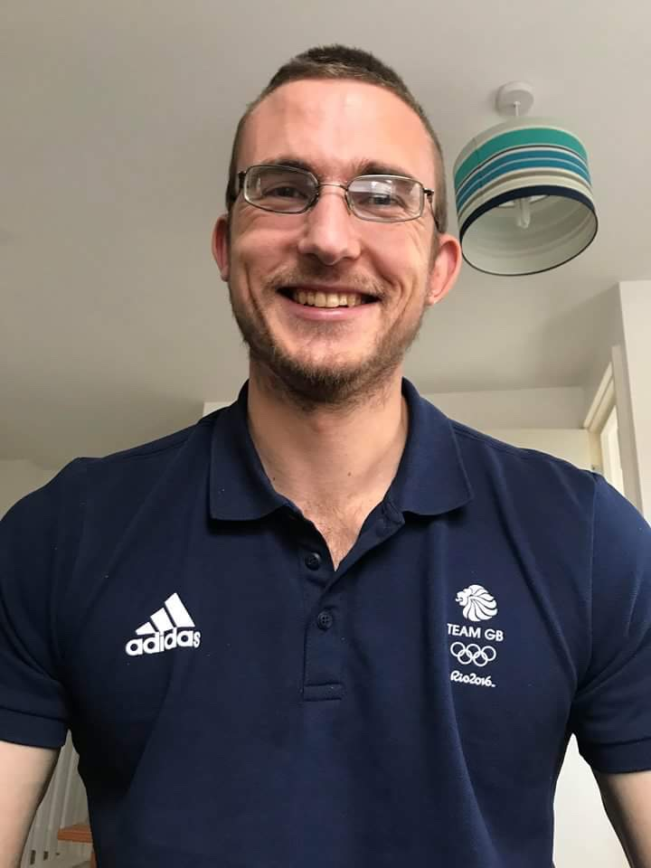
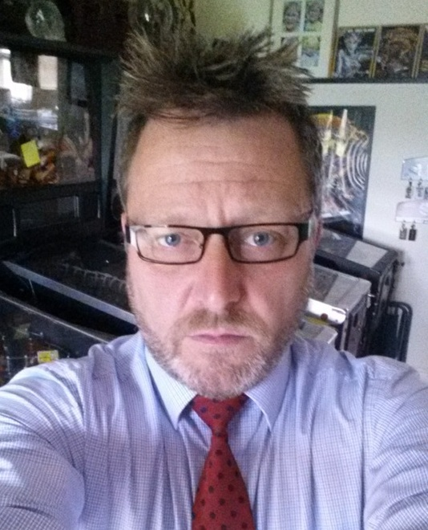

Meet the Group
The Computational Materials and Minerals Group is based at the University of Huddersfield, West Yorkshire, UK.
| Member | About | Contact |
|---|---|---|
Dr David Cooke |
David is a senior lecturer in Physical Chemistry in the department of Chemical Sciences at the University of Huddersfield (UK). He obtained his PhD in Computational Solid State Chemistry with Professor SC Parker at the University of Bath, before undertaking postdoctoral research positions further at the University of Bath, and the University of Cambridge. |
|
Dr Marco Molinari

|
Marco is a senior lecturer in physical and computational chemistry at the University of Huddersfield (UK). He obtained a first class degree in Chemistry at the University of Pavia (Italy, 2006) before taking his PhD in computational chemistry (2009) as a collaboration between Pavia and the University of Bath (UK). Following his PhD, he started his EPSRC funded postdoctoral research in the Parker Group at Bath, working on surface science, materials science and computational chemistry. |
|
Dr Joseph Flitcroft

|
Joe is a PDRA in computational materials chemistry. He obtained a 2.1 degree in Chemistry at the University of Bath (2013) before taking his PhD in computational chemistry (2018) also at the University of Bath (UK). After completing his PhD, he started an EPSRC funded post-doctoral research position in the Parker group at the University of Bath working on computational chemistry, materials science and interfaces, focusing on thermoelectric materials. Before moving to the Molinari group to study the surface chemistry of ceria for nanozyme applications. |
|
Roger Thornton

|
Roger is a PhD student in computational chemistry. He obtained a 1st class Chemistry Master's degree at the University of Huddersfield in 2015 prior to starting his PhD in analysis of green rust and its potential for nuclear waste storage and reprocessing. |
Researchgate
roger.thornton@hud.ac.uk |
Joshua Tse |
Josh is a PhD student at the University of Huddersfield researching the effect of Oxyanion doping of metal oxide materials. Awarded his BSc in chemistry in 2010 in the University of Bath he then went on to complete an MPhil under the supervision of Professor Steve Parker, researching the thermodynamic properties of Magnesium rich minerals using atomistic simulations. |
|
James Dawson |
James is a PhD student in computational chemistry. He obtained a 1st class degree in Chemistry at the University of Huddersfield in 2017 prior to starting his PhD research in radiation resistant materials. |
|
Samuel Moxon |
Sam is a Chemistry PhD student undertaking a project involving ‘Modelling the Radiolytic Corrosion of Nuclear Fuel’, funded as part of a EPSRC Doctoral Training Partnership with the University of Huddersfield. For his project he will employ computer modelling to investigate the nuclear fuel – water interface, to improve the ability to predict its long-term behaviour. Prior to undertaking his PhD, he secured a £3000 Summer Studentship funded by an EPSRC funded Computational Collaboration Project 5 in association with AWE after achieving a First class masters degree in Chemistry, both at the University of Huddersfield. |
|
 ORCID
ORCID